The Land
Pastures & mountain views
121 acres on the western edge of Catskill Park, in Sullivan County — vast pastures, big sky, and four minutes' walk from Main Street.

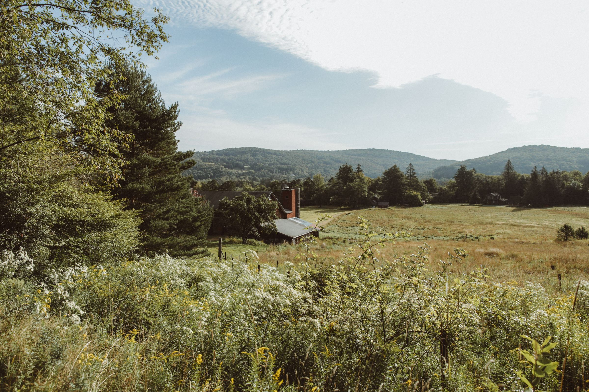
26 Hoag Road · Livingston Manor, NY
A working farm and farm-based gathering place — agroforestry, rotational grazing, an orchard and a market garden, with on-farm dinners from Chef Roxanne Spruance under string light and open sky.
A working farm, a gathering place

Livingston Farm is the transformation of an abandoned dairy farm into an agritourism destination — vast pastures, hemlock and hardwood forests, big mountain views, and a 20-acre working farm growing food for both Flybrook tables.
Around the Farm
The Land
121 acres on the western edge of Catskill Park, in Sullivan County — vast pastures, big sky, and four minutes' walk from Main Street.
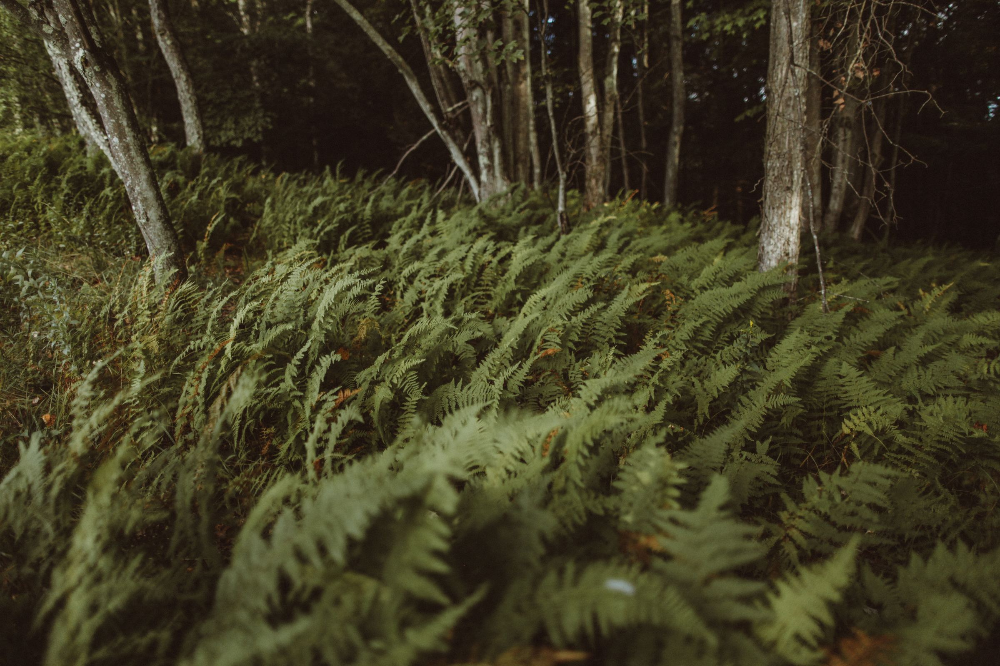
Forest
Magical northern forest with fern understory, resident bald eagles overhead, and wild mushrooms on the floor.
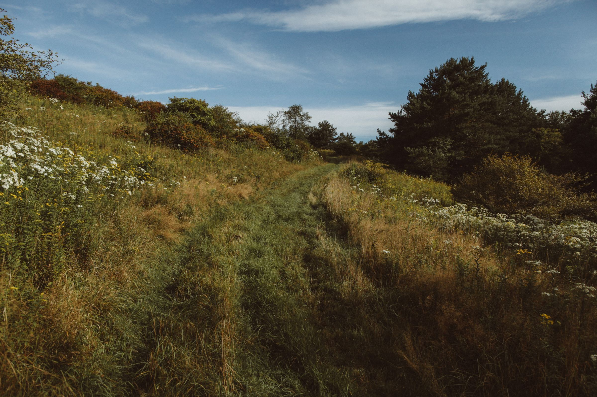
Trails
Trails through meadow and woodland for stargazing, nature watching, and contemplation — and a quick walk into the village of Livingston Manor.
Regenerative by design
From May through October, the farm grows the vegetables, herbs and eggs that shape each day's menu — picked at dawn at the source, on the table by lunch in Armonk. The plan integrates agroforestry, rotational grazing, an orchard and an intensive market garden — with more than 1,800 native trees and shrubs planted to kick off the regenerative agriculture program.
Recipient of a $1M Empire State Development grant supporting the farm's regenerative agriculture program.
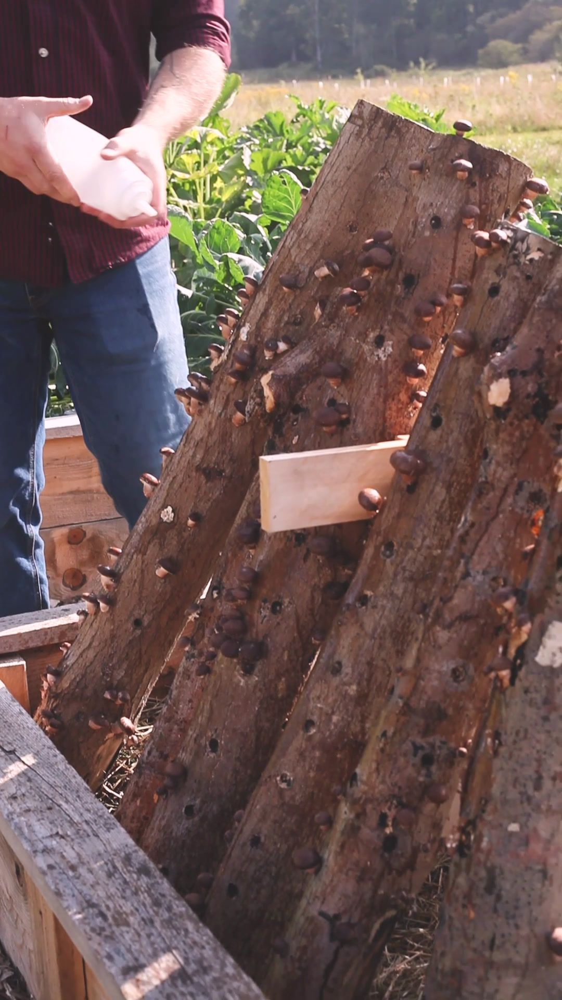
Farm Stays
A charming, newly renovated three-bedroom, two-bathroom farmhouse welcoming guests year-round to enjoy the farm's 121 acres for private hiking, stargazing, nature watching, campfires and contemplation.
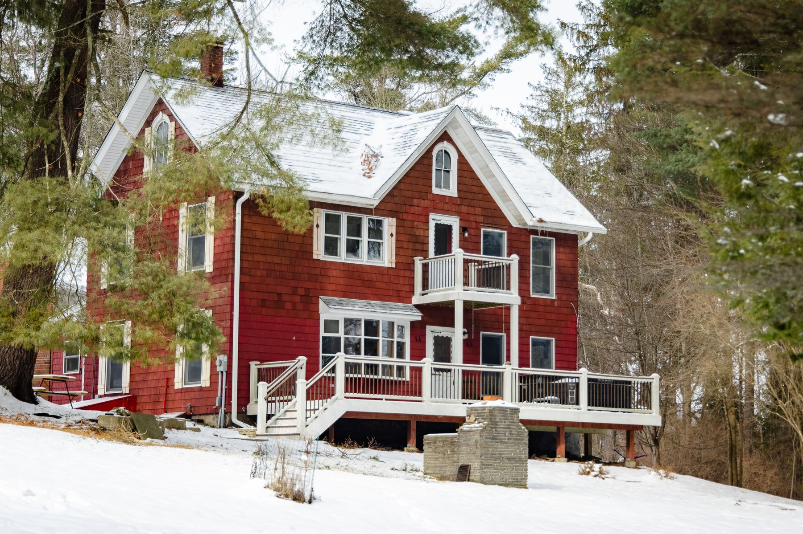
Exterior
Set into the hillside, with a wraparound deck and views down to the meadow.
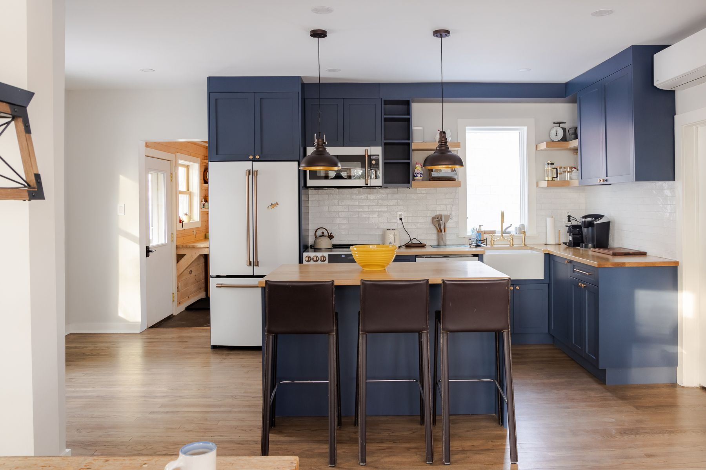
Kitchen
Bright, full-size, and ready for the morning's harvest from the garden a few steps away.
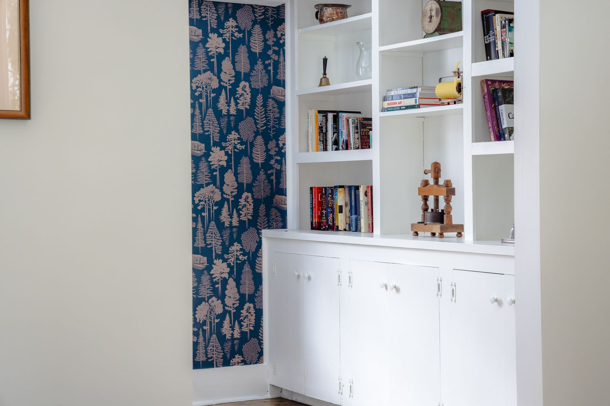
Nook
Quiet corners for coffee, a book, and the slow rhythm of a Catskills weekend.
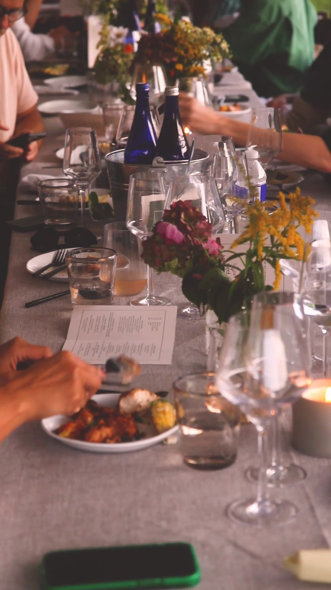
On-Farm Dining
From May through October, Flybrook hosts farm dinners and preview events at Livingston Farm — long tables in the garden, courses prepared outdoors over flame by Chef Roxanne Spruance, built around that day's harvest.
Five-course dinners. Wine and conversation. Sunset to dusk in the garden, then string light overhead.
A lookbook

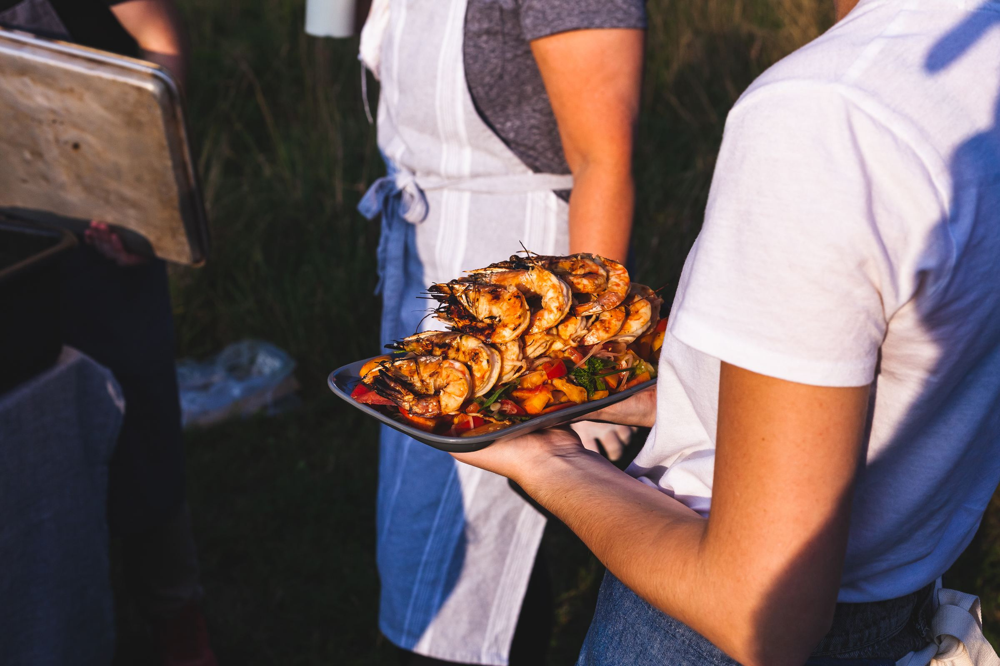
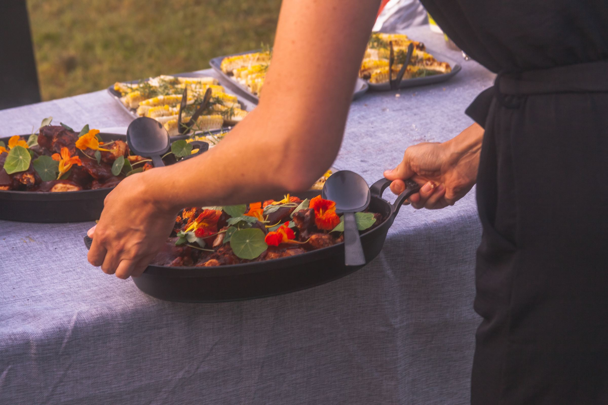
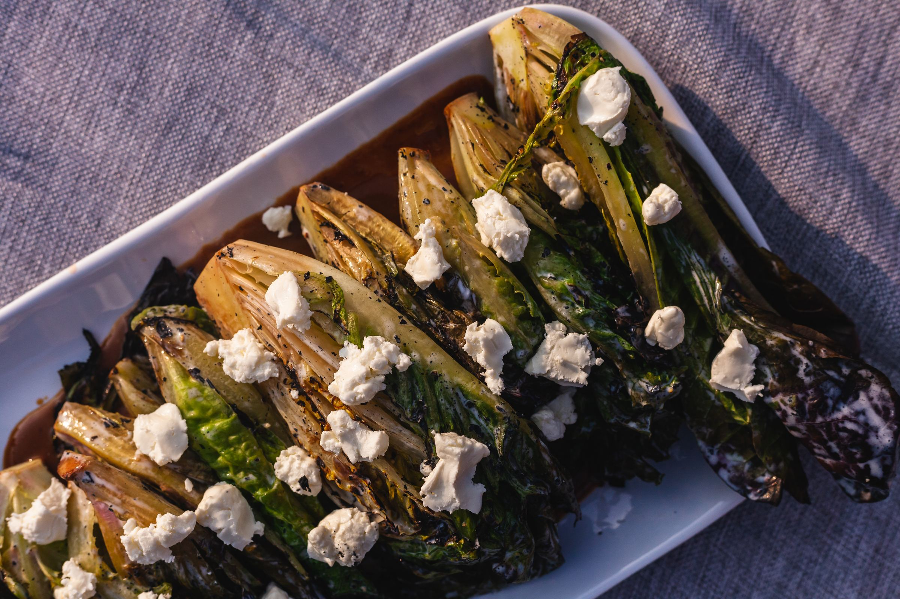
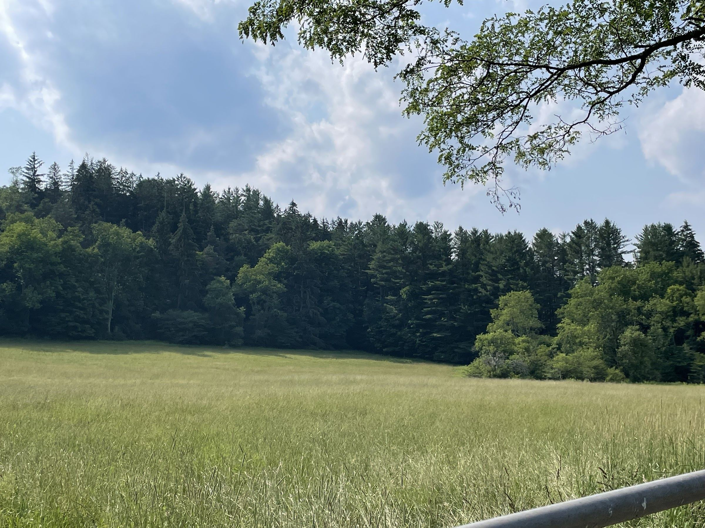
In the Catskills
Join the waitlist for opening news, farm dinners, and a few seats at the table.